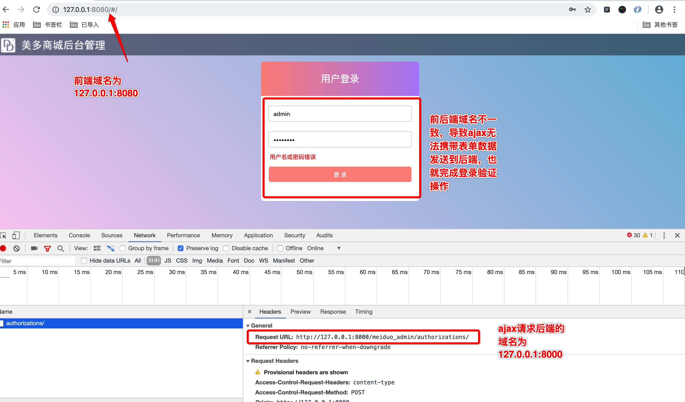
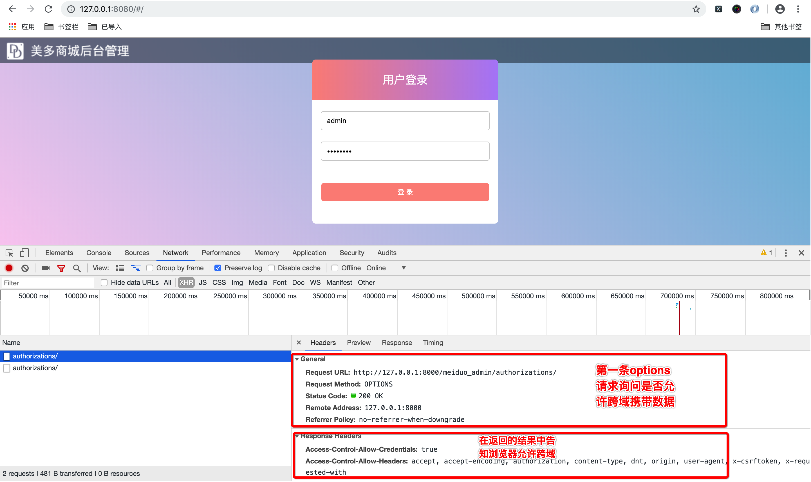
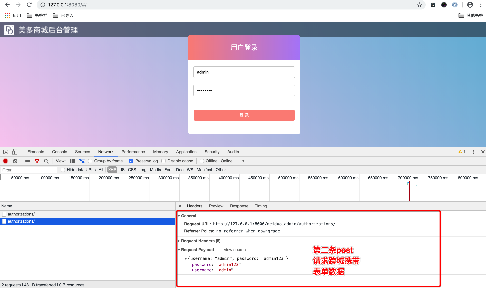

跨域CORS
我们的前端和后端分别是两个不同的端口
| 位置 | 域名 |
|---|---|
| 前端服务 | 127.0.0.1:8080 |
| 后端服务 | 127.0.0.1:8000 |

现在，前端与后端分别是不同的端口，这就涉及到跨域访问数据的问题，因为浏览器的同源策略，默认是不支持两个不同域名间相互访问数据，而我们需要在两个域名间相互传递数据，这时我们就要为后端添加跨域访问的支持。
我们使用django-cors-headers来解决后端对跨域访问的支持。
使用django-cors-headers扩展
参考文档https://github.com/ottoyiu/django-cors-headers/
安装
pip install django-cors-headers
添加应用
INSTALLED_APPS = (
...
'corsheaders',
...
)
中间层设置
MIDDLEWARE = [
'corsheaders.middleware.CorsMiddleware',
...
]
添加白名单
# CORS
CORS_ORIGIN_WHITELIST = (
'127.0.0.1:8080',
'localhost:8080',
'www.meiduo.site:8080',
'api.meiduo.site:8000'
)
CORS_ALLOW_CREDENTIALS = True # 允许携带cookie
- 凡是出现在白名单中的域名，都可以访问后端接口
- CORS_ALLOW_CREDENTIALS 指明在跨域访问中，后端是否支持对cookie的操作。
跨域实现流程为
1、浏览器会第一次先发送options请求询问后端是否允许跨域，后端查询白名单中是否有这两个域名
2、如过域名在白名单中则在响应结果中告知浏览器允许跨域
3、浏览器第二次发送post请求，携带用户登录数据到后端，完成登录验证操作
options请求

post请求
